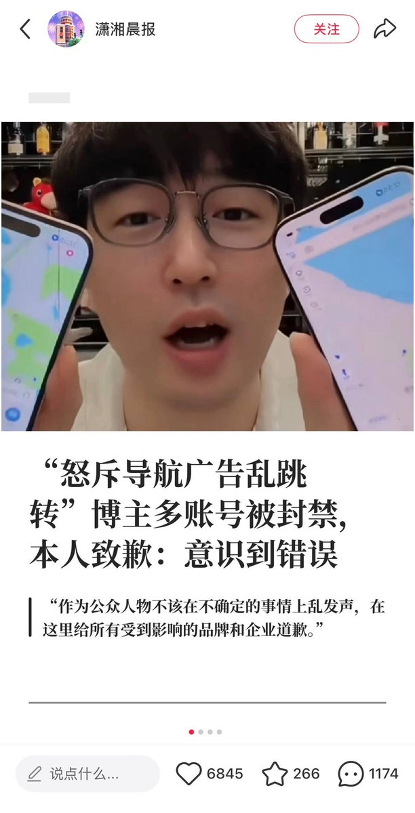

maybe🍥
@careforme123
@whyyoutouzhele 这个视频能发出来，说明抖音还是有人暗中帮他，好样的

李老师不是你老师
@whyyoutouzhele
9月22日，一名曾多次公开批评手机弹窗广告、在抖音拥有321万粉丝的网红博主发布道歉视频，称自己在其他平台的账号已全部被封禁。
该博主在视频中表示，“作为公众人物不该在不确定的事情上乱发声”，并向“所有受到影响的品牌和企业”道歉，同时称今后“不会再提任何与我无关的事”。 https://t.co/tScXo4loWp https://t.co/yRNtxMVibH